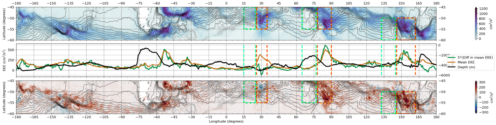
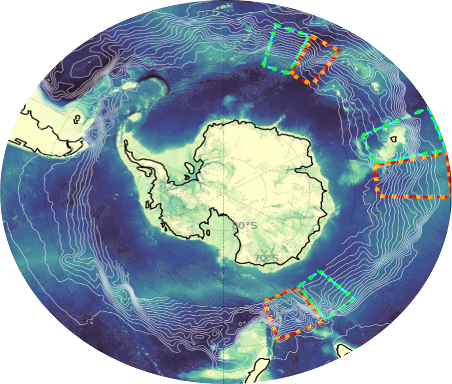
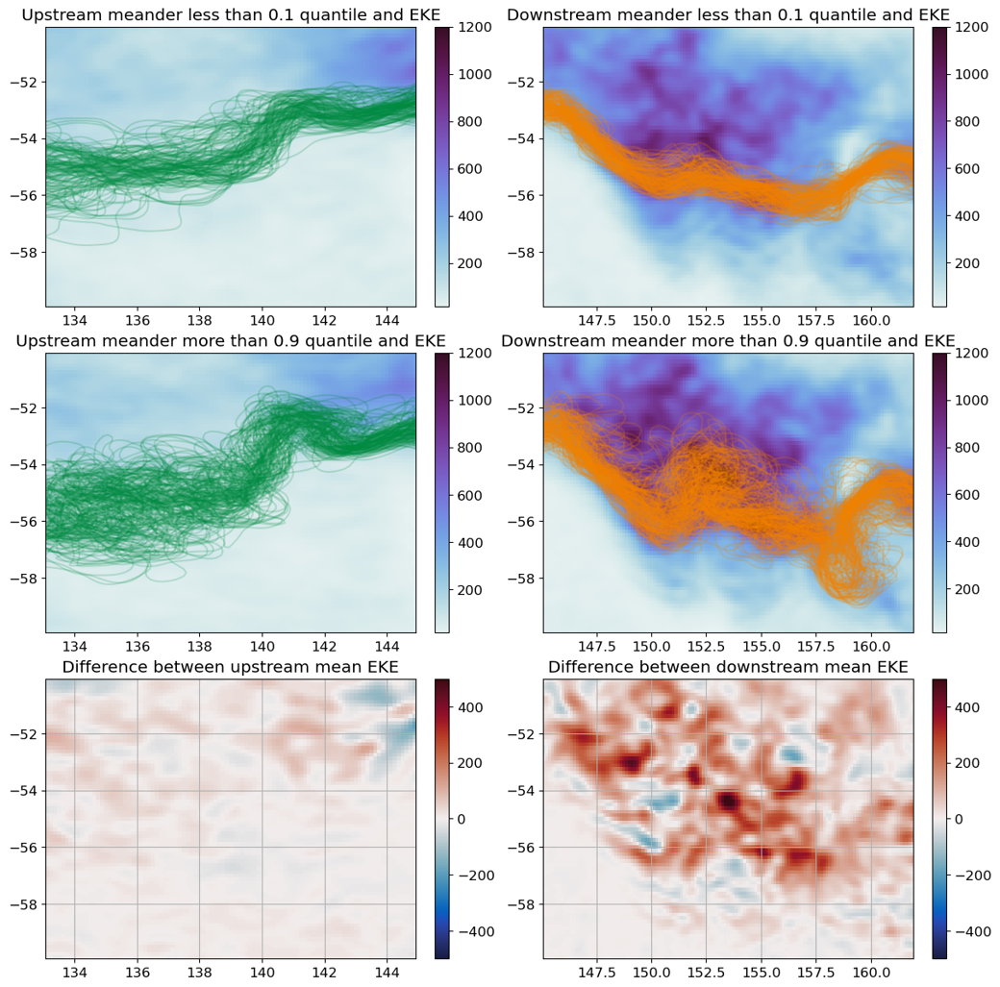
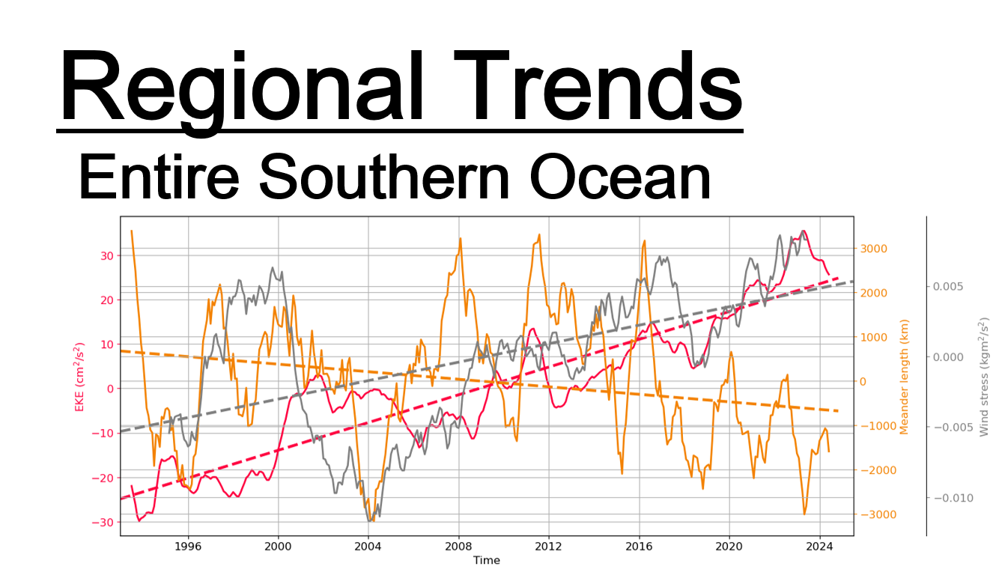
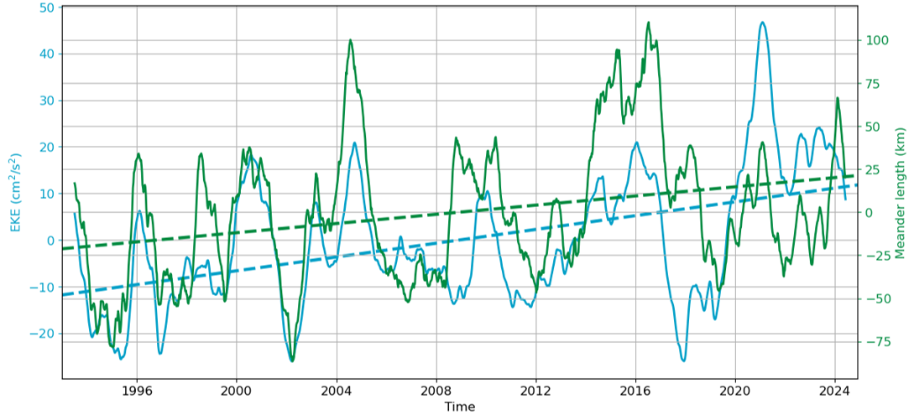

An interactive digital version of the poster presented at the 2026 AOSC Senior Research Symposium.
Surface winds over the Southern Ocean have been increasing with time, leading to changes in ocean surface kinetic energy that may affect the Earth's carbon cycle in ways not yet understood
In particular, these changes are predicted to be varied based on prior research examining larger Southern Ocean subregions. This research examined the role of topography in these regional differences, demonstrating the importance of local topography.

Sea surface height anomaly data were used to diagnose jet position variability and mesoscale activity.
1. The anomalies from the time-mean velocities as provided by the sea surface heights product are calculated.
2. The east-west component (u') and the north-south component (v') are used to calculate eddy kinetic energy
The length of the meander between two longitudes is understood to be correlated with the curvature of the meander. In other words, if the segment of the meander contained within a region is curvier, it have a longer path length than a straight segment, as in the proposed mechanism.
Reveal figures progressively using the arrow button, or continue scrolling normally through the poster.




EKE is observed to be both elevated and increasing at a greater rate downstream of undersea ridges in the Southern Ocean
Trends in meander length are less consistent, but also more positive downstream of undersea ridges.
EKE and curvature are generally more closely correlated over smaller regions than the entire Southern Ocean.
This slight positive correlation is still weak, with little to no improvement with different lag values
Further, this relationship does not appear to differ based on whether the smaller region is upstream or downstream of an undersea ridge.